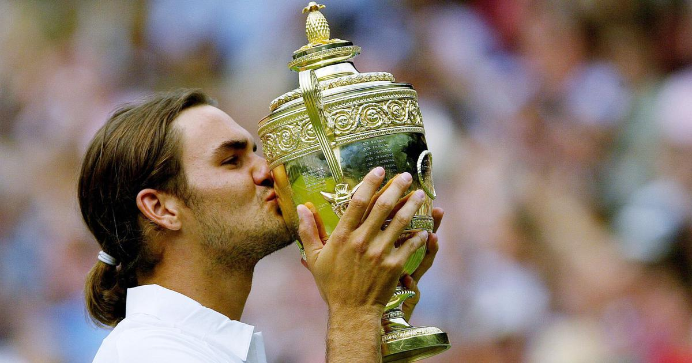

Skip to Main Content
Home
Grand Slam
ATP Tournament
Gallery
Roger Federer - Big Moment
Grand Slam Titles
Wimbledon
All title in Wimbledon of Roger Federer

First Grand Slam title for Federer
Wimbledon 2004
Wimbledon 2005
Wimbledon 2006
Wimbledon 2007
Wimbledon 2009, passing Pete Sampras
Wimbledon 2012, as a father
Wimbledon 2017